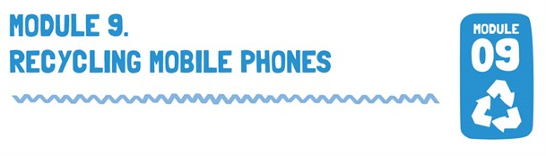

Lesson Objective
In this module students explore the concept of landfill and gain an understanding of the environmental benefits of mobile phone recycling. They will develop the understanding and skills necessary to act responsibly and create texts that inform and persuade others to take action for sustainable futures.
Australian Curriculum Content Description
| YEAR 3 ENGLISH |
YEAR 4 ENGLISH |
- Create imaginative texts based on characters, settings and events from students’ own and other cultures using visual features, for example perspective, distance and angle (ACELT1601)
- Create texts that adapt language features and patterns encountered in literary texts, for example characterisation, rhyme, rhythm, mood, music, sound effects and dialogue (ACELT1791)
|
- Create literary texts by developing storylines, characters and settings (ACELT1794)
- Create literary texts that explore students’ own experiences and imagining (ACELT1607)
|
| YEAR 3 SCIENCE |
YEAR 4 SCIENCE |
- Science knowledge helps people to understand the effect of their actions (ACSHE051)
|
- Science knowledge helps people to understand the effect of their actions (ACSHE062)
|
| YEAR 9 ENGLISH |
YEAR 10 ENGLISH |
- Create imaginative texts based on characters, settings and events from students’ own and other cultures using visual features, for example perspective, distance and angle (ACELT1601)
- Create texts that adapt language features and patterns encountered in literary texts, for example characterisation, rhyme, rhythm, mood, music, sound effects and dialogue (ACELT1791)
|
- Create literary texts by developing storylines, characters and settings (ACELT1794)
- Create literary texts that explore students’ own experiences and imagining (ACELT1607)
|
| YEAR 9 SCIENCE |
YEAR 10 SCIENCE |
- The values and needs of contemporary society can influence the focus of scientific research (ACSHE228)
|
- The values and needs of contemporary society can influence the focus of scientific research (ACSHE230)
|
Lesson Outline
1. As a class, watch the following videos about recycling and landfill.
3. After visiting the MobileMuster website as a class discuss the following questions:
a. How does recycling mobiles help the environment?
b. What are the benefits to recycling mobile phones?
c. What will happen if we don’t recycle?
d. What happens to mobile phone batteries in the recycling process?
e. What happens to mobile phone circuit boards?
f. What are some products that are created by the recovered materials?
g. How much can turning old tech into new products reduce greenhouse gases by?
h. Where can you recycle your phone to help the environment?
4. Explain that there are many ways to tell stories - particularly short stories. A comic could be displayed on the IWB or hardcopy.
5. Explain the main features of cartoons including: a. Reading format - boxes left to right in rows. b. Difference between speech, thought and exclamation bubbles. c. Importance of the story is shared through pictures. d. Captions should be short and sharp.
6. Ask students to design their own cartoon that describes the environmnetal benefits of recycling mobile phones. They can use the blank cartoon worksheet or Toon Doo via the internet.
7. Teacher and students discuss potential storylines. The character in the cartoon may weigh up the pros and cons of recycling before deciding what to do with their old mobile. The cartoon should demonstrate the environmental, social and economic benefits of their decision.
8. When students have completed their cartoon they should share/discuss with another pair, once each team has seen two other working pairs the teacher should instigate a whole class share and reflection.
9. Share your student work and upload the cartoons to the MusterKids Zone on the MobileMuster website.
Resources
1. Interactive whiteboard (IWB)
2. Fact Sheet: Recycling Mobile Phones
3. Presentation: Why is it important to recycle phones?
4. Video: MobileMuster Recycling Program
5. Worksheet: Mobile Phone Cartoon or computer access to Toon Doo and set up a free online account for comic creator: toondoo.com
6. Game: Mobile Phone Recycling Picture Sentence Match
7. Computer access for extension activity
Support Material
Extension Activities
Access Hero Creator and students can create their own mobile phone recycling hero http://www.ugo.com/games/superhero-generator-heromachine-2-5
Download and print the PDF document.